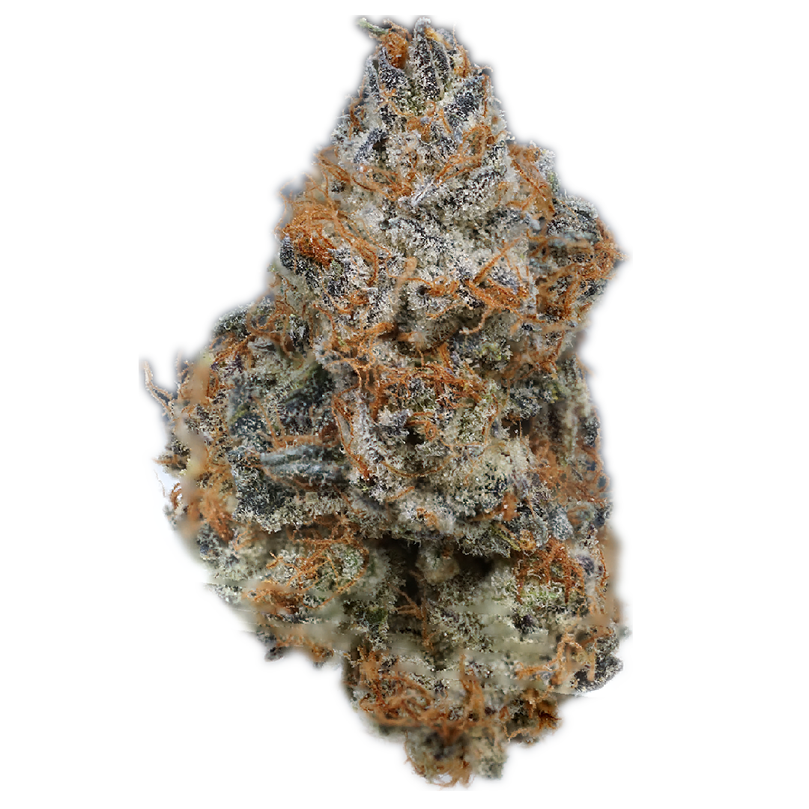
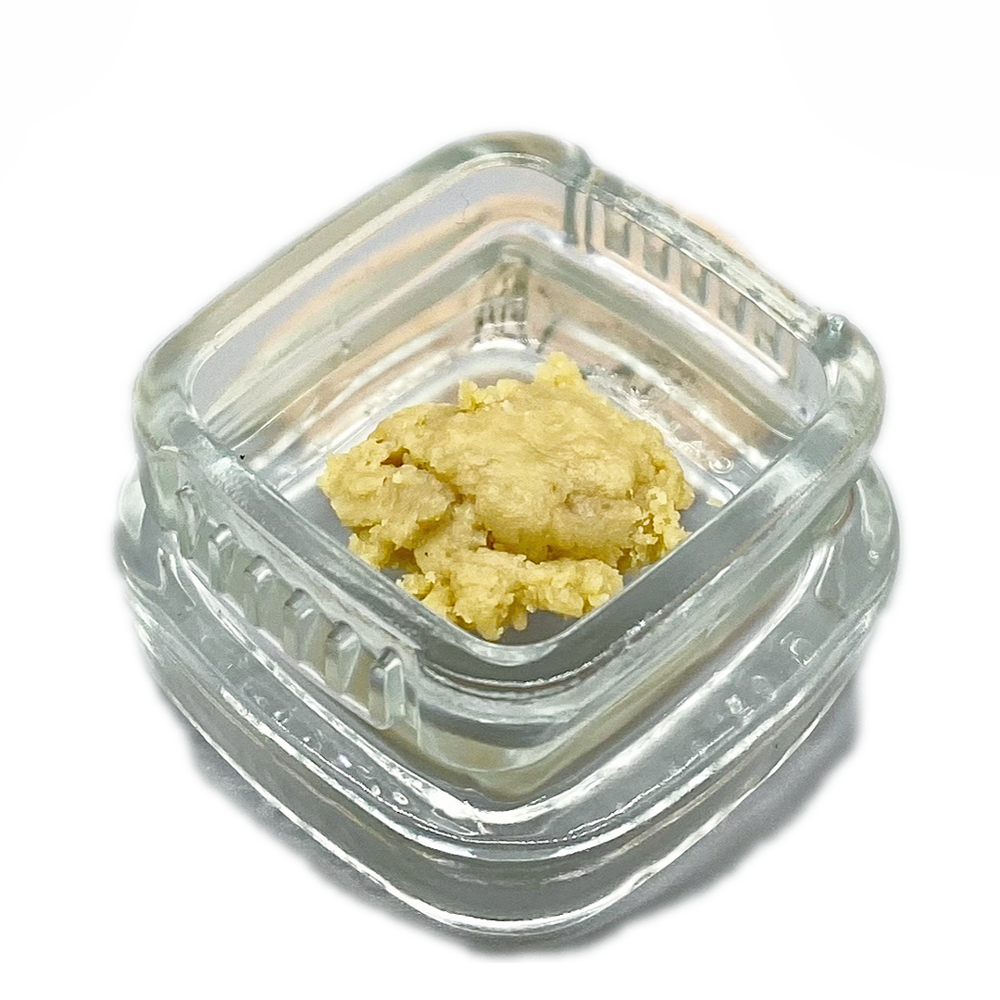
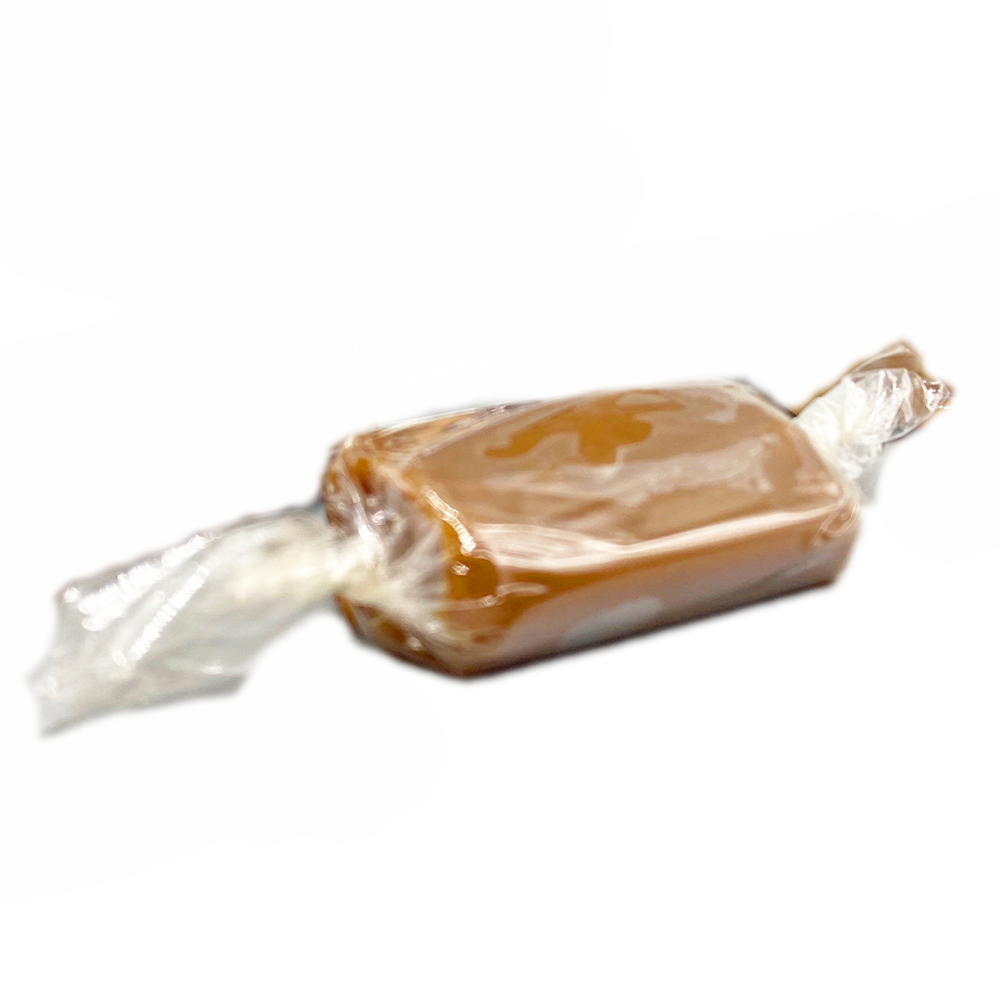
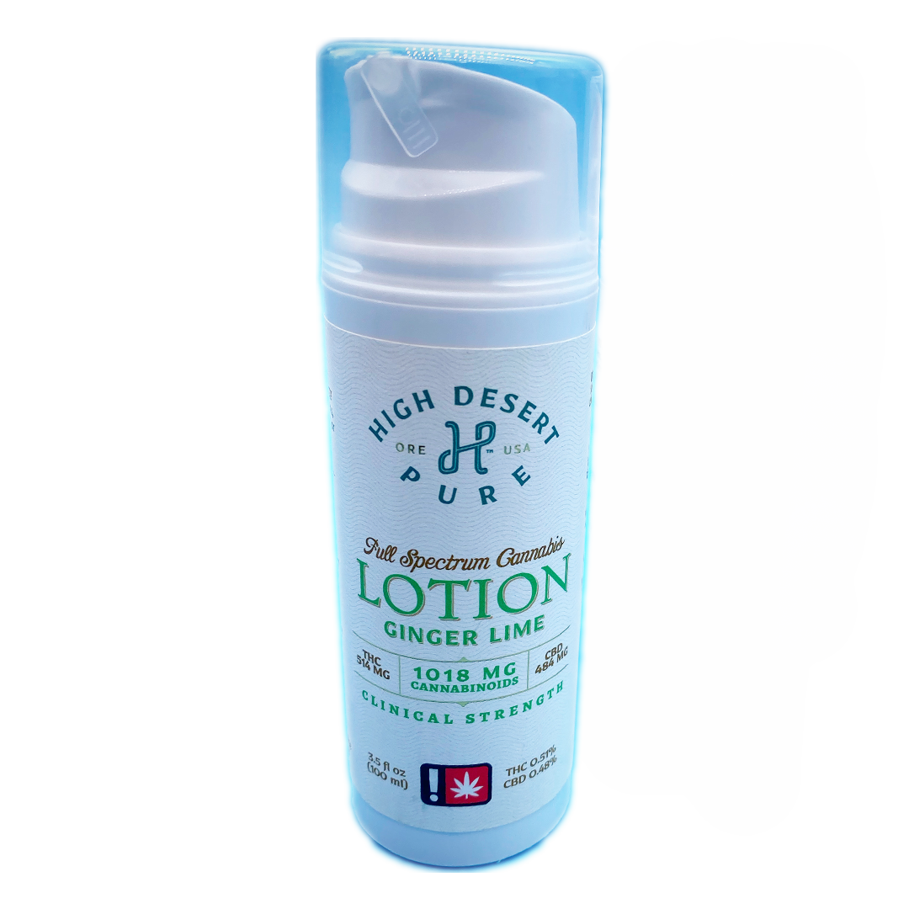

.png)

Top Shelf Craft Cannabis
While Oregon may have legalized Marijuana recreationally there are still many laws and regulations that limit ones choices of quantity, potency and affordability. This is where medical comes in, it gives a cardholder a much wider range of opportunities to take advantage of bulk discounts without sacrificing quality. 1/2 Pounds starting at $300.

Cannabis Concentrates
Substances in which the more desirable properties of cannabis, namely cannabinoids and terpenes, have been isolated. Concentrates with active cannabinoids, usually distillate, are infused into edibles, tinctures, and topicals to provide effects without the application of heat.

Cannabis Infused Edibles
A food infused with cannabinoids. Edibles are processed differently than inhaled cannabinoids. When weed is ingested, cannabinoids enter the bloodstream through the stomach and liver, which increases potency and delays the onset of effects. This also lengthens the intoxicating effects, sometimes lasting 4-6 hours.

Therapeutic Cannabis Topicals
An ointment, lotion, transdermal solutions, as well as lubricants that is applied directly to the body’s surface. Topicals are utilized for fast-acting localized relief of inflammation and pain. Topicals allows patients to enjoy the plant’s therapeutic effects.
Portland Location
1465 N.E. Prescott ST,
Suite C
Portland, OR. 97211
Contact Us
info@kingsofcanna.com
971-319-6945